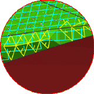
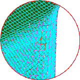

当您更新用于皱褶的铺层和层片时，会打开信息窗口，并在必要时显示以下警告消息：
警告 — 检测到层片 X 方向的连续性较差，皱褶结果可能是错误的，检查单元法向、斜率连续性以及网格密度
在图形窗口中，单元间连续性不佳的区域将高亮显示。单元边和单元法线显示为黄色。
警告 — 层片 X 方向展平可能撕裂或重叠
在图形窗口中，单元发生分裂或重叠的区域将高亮显示。单元边显示为红色。
警告 — 层片 X 方向展平可能撕裂或重叠
在图形窗口中，单元可能发生分裂或重叠的区域将高亮显示。单元边显示为洋红色。
|
 |
 |
当算法检测到纤维中的拉伸时发出最后两条警告，这可能表示层片与不可展开的面不相符。实际上，层片会在模型上显示出间隙或皱褶。
用以下修补措施之一改善皱褶过程：
使用不同的起点和皱褶方向
在层片中添加接头
引入剖切曲线